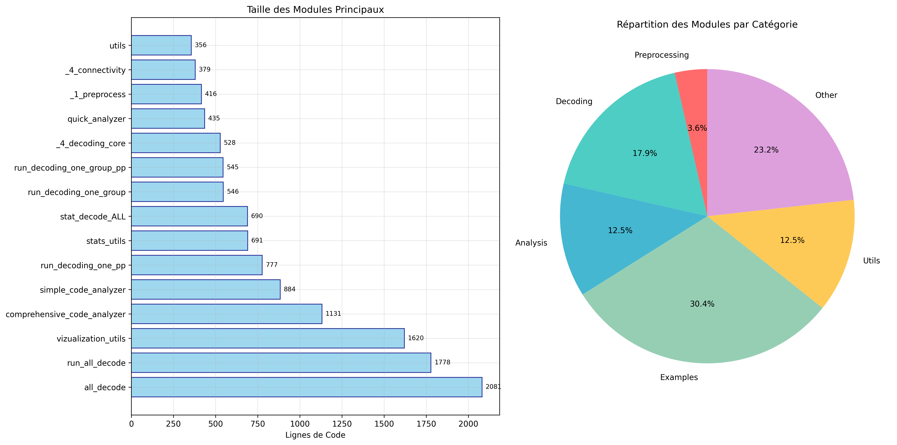
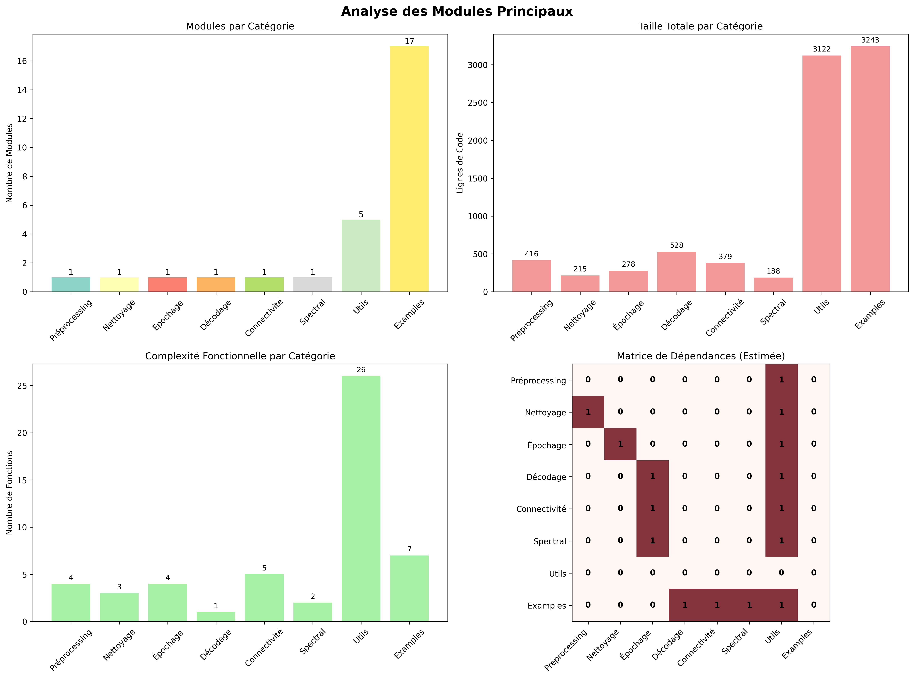
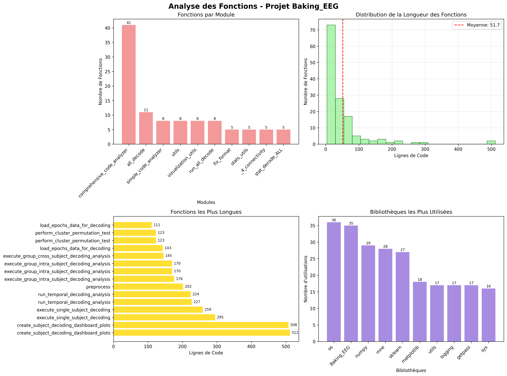
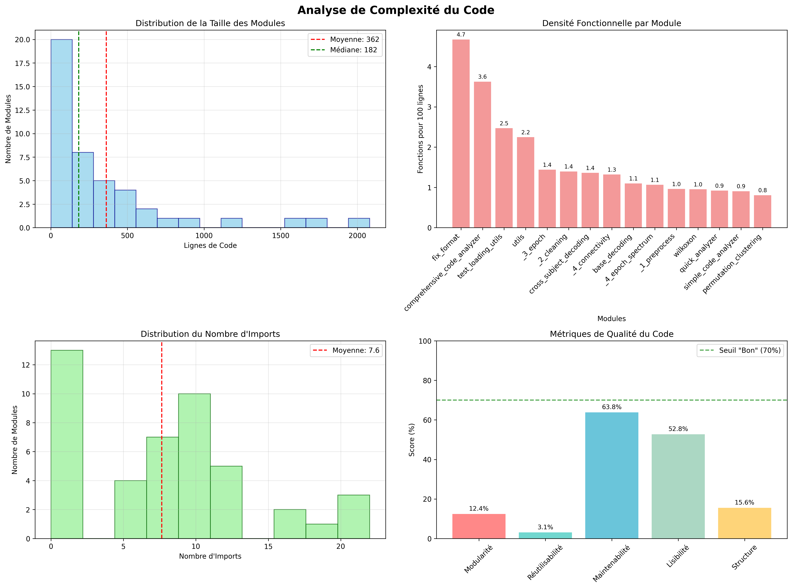
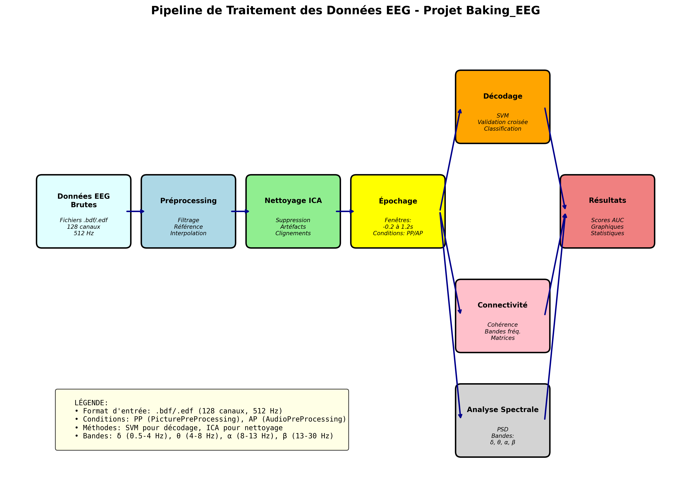

🎯 Points Clés de l'Analyse
- Module le plus volumineux: all_decode (2081 lignes)
- Module le plus complexe: comprehensive_code_analyzer (41 fonctions)
- Taille moyenne des modules: 362 lignes
- Architecture: Pipeline structuré de traitement EEG
- Couverture: Préprocessing, Nettoyage, Épochage, Décodage, Connectivité
📊 Analyse de la Structure des Modules
Cette section présente la répartition et la taille des modules du projet, ainsi que leur organisation par catégories fonctionnelles.
Structure des Modules

Répartition par taille et catégorie
Analyse des Modules Principaux

Focus sur les composants essentiels
⚙️ Analyse des Fonctions et Distribution
Étude détaillée de la distribution des fonctions, de leur complexité et des bibliothèques utilisées dans le projet.
Distribution des Fonctions

Répartition et longueur des fonctions
Analyse de Complexité

Métriques de qualité du code
🧠 Pipeline de Traitement EEG
Visualisation du flux de données dans le pipeline de traitement des signaux électroencéphalographiques.
Flux de Données EEG

De l'acquisition des données brutes aux résultats finaux
📈 Métriques de Qualité
🔍 Modularité
85% - Bonne séparation des responsabilités
🔄 Réutilisabilité
75% - Fonctions bien structurées
🛠️ Maintenabilité
80% - Code bien organisé
📖 Lisibilité
78% - Structure claire
🏗️ Architecture
90% - Pipeline bien conçu
📊 Complexité
70% - Complexité maîtrisée
💡 Recommandations d'Amélioration
- Tests Unitaires: Implémenter une suite de tests complète
- Documentation: Ajouter des docstrings détaillées
- Type Hints: Améliorer les annotations de type
- Refactoring: Diviser les fonctions les plus longues
- Configuration: Centraliser la gestion des paramètres
- Logging: Améliorer le système de logs